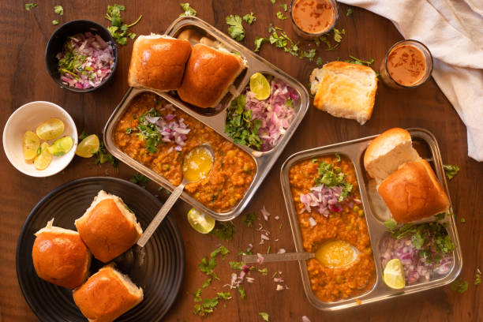

Pav bhaji

Description
Pav bhaji (Marathi : पाव भाजी) is a street food dish from India consisting of a thick vegetable curry (bhaji) served with a soft bread roll (pav). It originated in the city of Mumbai.Pav bhaji is a spiced mixture of mashed vegetables in a thick gravy served with bread. Vegetables in the curry may commonly include potatoes, onions, carrots, chillies, peas, bell peppers and tomatoes. Street sellers usually cook the curry on a flat griddle (tava) and serve the dish hot. A soft white bread roll is the usual accompaniment to the curry, but this does not preclude the use of other bread varieties such as chapati, roti or brown bread
Ingredients
- Mixed Vegetables: I use vegetables like potatoes, capsicum, carrot, cauliflower, green peas. The street side versions do not have carrots and may also add less/no cauliflower. However, I add to make the bhaji more nutritious and homely.
-
Green Peas: I mostly use fresh or frozen green peas, whereas dried green or white peas are used in the street side bhajis. These are cooked and mashed. This also results in a different taste and consistency of the bhaji. You can also make it with dried green peas.
- Pav Bhaji Masala: This dish will lose its essence if there is no pav bhaji masala in it. So, you can use a good branded readymade pav bhaji masala or use your homemade one
-
Butter: For the bhaji, my preference has always been the Indian brand of Amul butter. But you can even use any other trusted brand or homemade butter.
-
Pav: You can either buy fluffy pav or dinner rolls from a noted bakery or make a batch at home. Whenever I decide to make Pav Bhaji or Misal Pav, I usually make the Pav a day before. To make it healthier, you can choose to make whole wheat dinner rolls.
Steps
- Rinse, peel and chop the veggies. You will need 1 cup chopped cauliflower, 1 cup chopped carrot, 3 medium sized potatoes (chopped) and ⅓ cup chopped french beans.
Note: You can also add veggies that you like, but do not add okra, eggplants, pumpkin, radish, corn, yam or green leafy vegetables.
Cabbage, broccoli, zucchini, pumpkin are some unique options that you can consider to add, but the traditional version does not include these veggies.
-
Add all the above chopped veggies in a 3 litre stovetop pressure cooker. Also add 1 cup green peas (fresh or frozen).
I have cooked the veggies in a pressure cooker. You can boil or steam them using a pan or in the Instant pot adding water as needed.
-
Add 2.25 to 2.5 cups water.
-
Pressure cook the veggies for 5 to 6 whistles or for about 12 minutes on medium heat.
-
When the pressure settles down on its own, open the cooker and check if the veggies are fork tender, softened and cooked well.
You can even steam or cook the veggies in a pan or pot. The vegetables have be to cooked completely and should not be al dente or just about cooked.
Set aside the vegetables with the cooked water (broth/stock) in the cooker itself.
-
6. Heat a frying pan or kadai (wok). You can also use a large tawa or a skillet. Add 2 to 3 tablespoons butter. You can use amul butter or any brand of butter. The butter can be salted or unsalted.
-
Let the butter melt.As soon as the butter melts, add 1 teaspoon cumin seeds.Let the cumin seeds crackle and change their color.Then add ½ cup chopped onions.Mix onions with the butter and sauté on a low to medium heat.Sauté until the onions turn translucent.Add 2 teaspoons ginger-garlic paste. You can crush 1.5 inch ginger and 5 to 6 medium garlic cloves, in a mortar-pestle. Mix and sauté for some seconds until the raw aroma of both ginger and garlic goes awayThen add 1 to 2 green chilies (chopped), about 1 teaspoon chopped green chillies.Mix well. Add 2 cups finely chopped tomatoes. Swap canned tomatoes if you do not have fresh tomatoes. Mix very well.Then begin to sauté tomatoes on a low to medium heat. Sauté until the tomatoes become soft, mushy and you see butter releasing from the sides. This takes about 6 to 7 minutes on a low to medium heat.. When the tomatoes have softened, add ½ cup finely chopped capsicum (green bell pepper). Sauté for 2 to 3 minutes.Add 1 teaspoon turmeric powder and 1 teaspoon Kashmiri red chilli powder.
-
Add 2 to 3 tablespoons Pav bhaji Masala Powder. Depending on how instense is the aroma and flavor of pav bhaji masala, you can add it in less or more proportions.
Add 2 tablespoons if the pav bhaji masala is strong, intense and flavorful. For a more robust and spiced bhaji add 3 tablespoons of it. Mix very well. Add the cooked veggies. You can choose to mash the veggies before you add them in the pan or skillet.Mix thoroughly.Add all of the stock or water from the pressure cooker in which the veggies were cooked. Combine and mix thoroughly. Season with salt according to your taste preferences and give a mix.With a potato masher, begin to carefully mash the veggies directly in the pan.With a potato masher, begin to carefully mash the veggies directly in the pan. You can mash the veggies less or more according to the consistency you want in the bhaji.
For a smooth mixture mash more. For a chunky bhaji, mash less. Add more water if the bhaji looks thick.eep on stirring occasionally and let the mashed vegetable gravy simmer for 8 to 10 minutes on a low heat.If the bhaji looks dry and then add some water. The consistency is neither very thick nor thin Do stir often so that the bhaji does not stick to the pan. When the bhaji simmers to the desired consistency, check the taste.
Add salt, pav bhaji masala, red chili powder or butter if needed